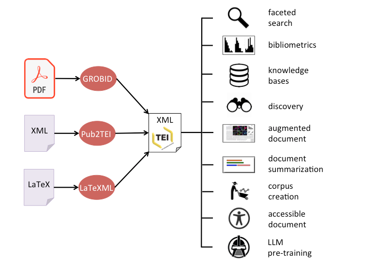
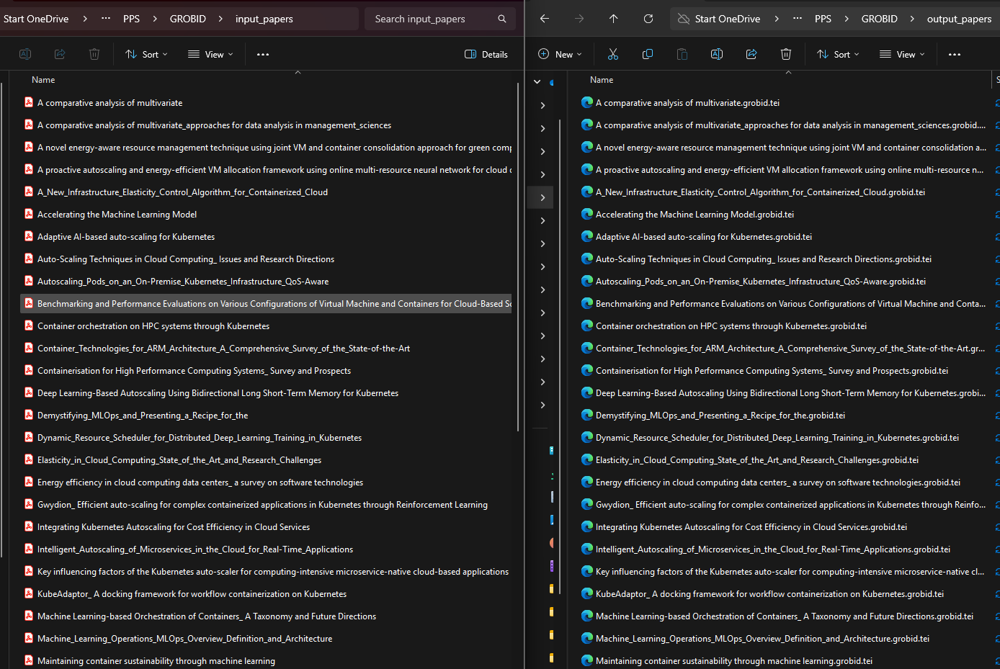
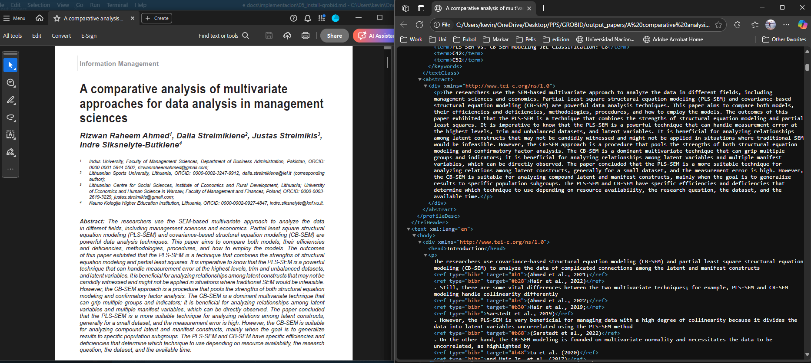

Instalación y Ejecución de GROBID

La forma más recomendada de utilizar GROBID es a través de Docker, ejecutándolo como un servidor local.
Existen dos opciones de imágenes disponibles:
-
Imagen completa
Esta imagen ofrece la mejor precisión, ya que incluye todas las bibliotecas necesarias de Python, TensorFlow, soporte para GPU y todos los modelos de Deep Learning.- Es ideal para quienes disponen de una computadora con buena capacidad (preferentemente con GPU) y trabajan con una cantidad limitada de archivos PDF.
- Requiere más recursos de hardware.
- Para ejecutarla, se debe utilizar el siguiente comando:
docker run --name grobid --gpus all --init --ulimit core=0 -p 8070:8070 -d grobid/grobid:0.8.2
Nota importante:
Durante las pruebas, se intentó utilizar la imagen liviana (lfoppiano/grobid:0.8.1), pero no estaba disponible en el momento de la ejecución.
Por este motivo, se optó por utilizar la imagen completa (grobid/grobid:0.8.1), que ofrece una mejor precisión y rendimiento en la extracción de datos de los documentos PDF.
Una vez que GROBID está en ejecución, se puede verificar su funcionamiento accediendo, desde un navegador web, a:
Allí se encuentra la página de bienvenida del servidor, desde donde es posible utilizar los servicios de procesamiento de documentos de manera manual. Sin embargo, para este proyecto, el procesamiento se realiza de forma automatizada mediante clientes Python, como se explica a continuación.
Instalación del cliente Python de GROBID
Para automatizar el procesamiento de documentos con GROBID desde Python, es necesario instalar el cliente oficial. Este cliente permite interactuar fácilmente con el servidor GROBID desde scripts Python.
python3 -m pip install grobid-client-python
Esto instalará la biblioteca grobid-client y sus dependencias. Si necesitas instalarlo en un entorno específico (por ejemplo, dentro de un contenedor Docker), asegúrate de ejecutar el comando en ese entorno.
Estructura del Entorno de Trabajo
En el flujo de trabajo propuesto, se define una estructura simple con los siguientes elementos clave:
- 📁 input_papers: Carpeta que contiene los archivos PDF a procesar.
- 📁 output_papers: Carpeta donde se guardarán los archivos XML generados por GROBID.
- 📄 config.json: Archivo de configuración del cliente GROBID.
- 📄 cliente_grobid.py: Script Python para ejecutar la conversión masiva.
📄 config.json
Este archivo es necesario para establecer la configuración del cliente. En este caso, no requiere modificación:
{
"grobid_server": "http://localhost:8070",
"batch_size": 100,
"sleep_time": 5,
"timeout": 60,
"coordinates": [ "persName", "figure", "ref", "biblStruct", "formula", "s", "note", "title" ]
}
📄 cliente_grobid.py
Este script ejecuta el cliente GROBID para transformar todos los archivos .pdf en la carpeta input_papers y guardar los .xml resultantes en output_papers.
from grobid_client.grobid_client import GrobidClient
if __name__ == "__main__":
client = GrobidClient(config_path="./config.json")
client.process("processFulltextDocument", "input_papers", output="output_papers/", consolidate_citations=False, tei_coordinates=False, force=True)
El script utiliza la biblioteca grobid-client para interactuar con el servidor GROBID. La función process se encarga de procesar los documentos PDF en la carpeta input_papers, generando archivos XML que se guardan en la carpeta output_papers. Los parámetros adicionales permiten ajustar el comportamiento del procesamiento, como la consolidación de citas y las coordenadas TEI.
Para ejecutar el script, se debe usar específicamente Python 3 con el comando:
python3 cliente_grobid.py

Cada pdf se pasará a XML:
